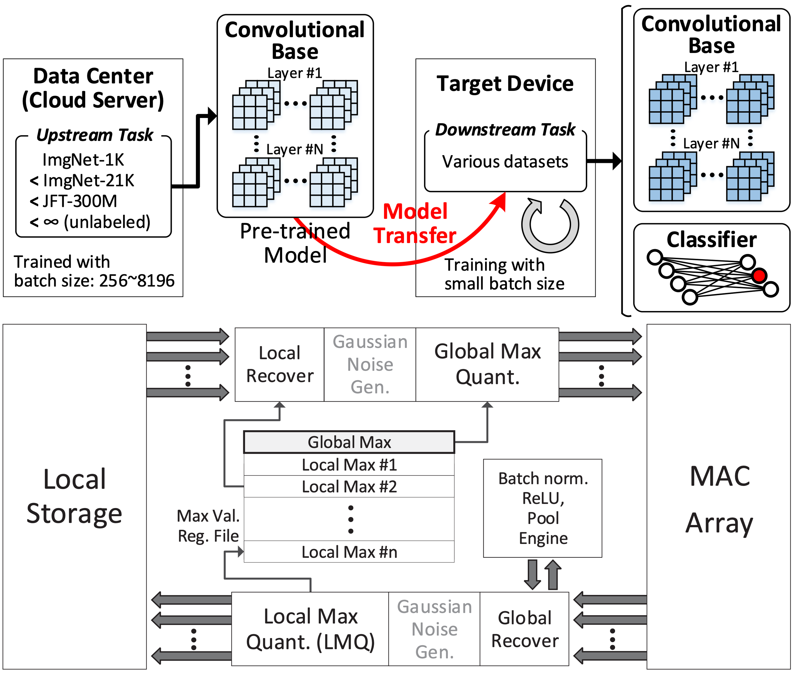
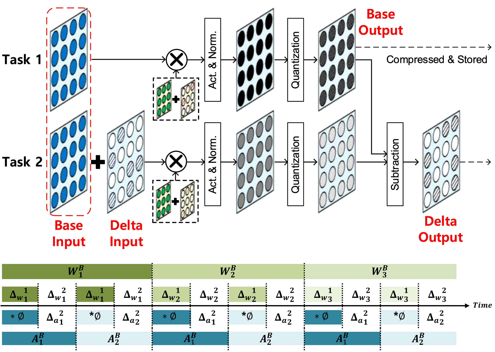
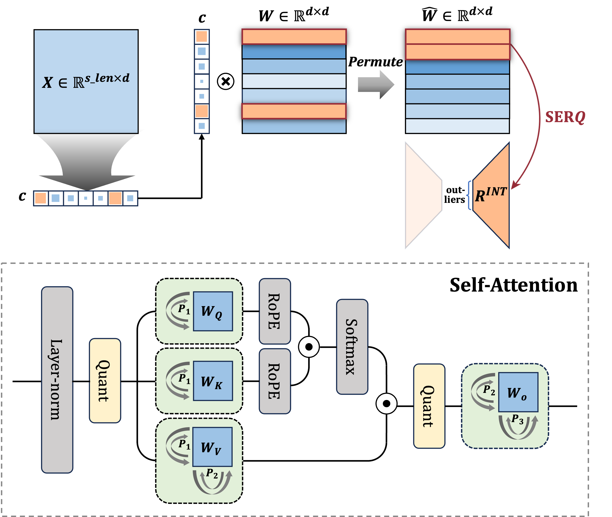
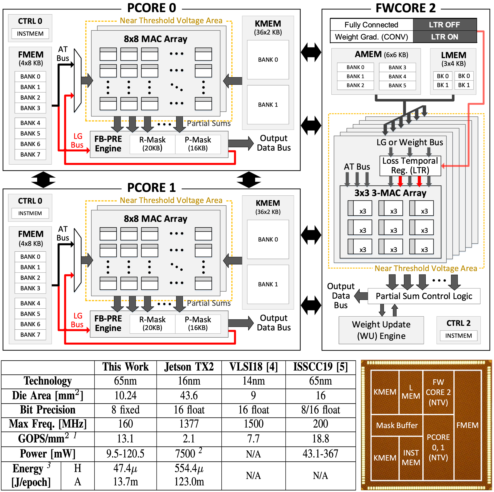

Full-Stack Optimization for AI Acceleration
AI System Design With Hardware-Friendly Algorithm
-
Summary:
- Low-bit AI Framework for on-device personalization & quantized MAC operating system design
- A low-cost convergence monitoring system for computation skip in DNN training -
Reference:
- Seungkyu Choi, Jaekang Shin, Yeongjae Choi, and Lee-Sup Kim, "An Optimized Design Technique of Low-bit Neural Network Training for Personalization on IoT Devices," ACM/IEEE Design Automation Conference (DAC), 2019.
- Seungkyu Choi, Jaekang Shin, and Lee-Sup Kim, "A Convergence Monitoring Method for DNN Training of On-device Task Adaptation," IEEE/ACM International Conference on Computer-Aided Design (ICCAD), 2021.

Algorithm-Hardware Co-Design for Efficient DNN Processing
-
Summary:
- The proposed algorithmic scheme for multi-task DNN reduces per-task weight and activation size by sharing those data between tasks. We design architecture and dataflow to minimize DRAM access by fully utilizing the benefits -
Reference:
- Jaekang Shin, Seungkyu Choi, Jongwoo Ra, and Lee-Sup Kim, "Algorithm/Architecture Co-Design for Energy-Efficient Acceleration of Multi-Task DNN," ACM/IEEE Design Automation Conference (DAC), 2022.

Efficient Algorithm for Deep Learning Models
-
Summary:
- We are focusing on hardware-efficient algorithms for large foundation models by leveraging various model compression techniques(Quantization, Pruning, Knowledge Distillation, etc.). We provide optimal, lightweight solutions for target hardware by directly optimizing the trade-offs among storage, computation and accuracy. -
Reference:
- Yeonsik Park, Hyeonseong Kim, Jiyun Han, and Seungkyu Choi, "SERQ: Saliency-Aware Low-Rank Error Reconstruction for LLM Quantization," International Conference on Learning Representations (ICLR), 2026.

A Dataflow Architecture Design (AI Processor)
-
Summary:
- A scalable deep-learning accelerator supporting the training process is implemented for device personalization of deep convolutional neural networks (CNNs). It consists of three processor cores operating with distinct energy-efficient dataflow for different types of computation in CNN training. A disparate dataflow architecture is implemented for the weight gradient computation to enhance PE utilization while maximally reuse the input data. -
Reference:
- Seungkyu Choi, Jaehyeong Sim, Myeonggu Kang, Yeongjae Choi, Hyeonuk Kim, and Lee-Sup Kim, "An Energy-Efficient Deep Convolutional Neural Network Training Accelerator for In Situ Personalization on Smart Devices," IEEE Journal of Solid-State Circuits, Oct. 2020.
